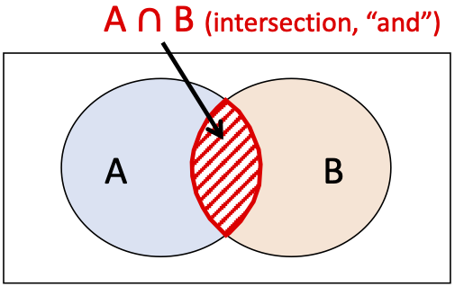
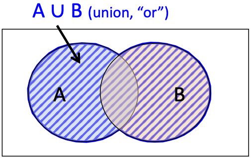
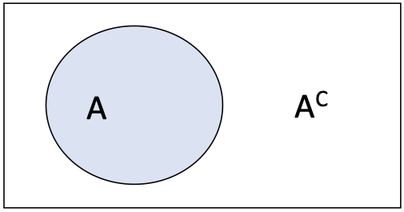

Probability Rules (relevant to Probability Sampling)
PUBHBIO 7225
For some of you, this material may be less familiar (depending on which prerequisite courses you took). I will demonstrate what is necessary for this class (and please ask Qs!).
Generative AI acknowledgment: MS Copilot was used to help generate alt text for images
Events and Sample Space
Event = an outcome of interest
Usually denoted with a capital letter near the beginning of the alphabet, like A or B
Examples:
A = randomly selected person is left-handed
B = randomly selected person likes pineapple on pizza
Sample space = collection of all possible events
Usually denoted with a capital Greek letter omega: \(\Omega\)
Examples:
{Left-handed, Right-handed, Ambidextrous}
{Likes pineapple on pizza, Doesn’t like pineapple on pizza}
Each outcome/event is associated with a probability, think of this as a long-run frequency of the outcome/event occurring.
\(P(A)\) = probability that event A occurs
\(P(A \text{ and } B) = P(A \cap B)\) = probability that events A and B both occur = Intersection
\(P(A \text{ or } B) = P(A \cup B)\) = probability that either A or B (or both) occur = Union


Basic Probability Properties
\(P(\Omega)=1\) (something in the sample space must happen)
For any event \(A\), \(0 \le P(A) \le 1\) (probabilities are between 0 and 1, inclusive)
If \(A\) and \(B\) are disjoint, then \(P(A \text{ or } B) = P(A \cup B) = P(A)+P(B)\)
(the probability of the union of two disjoint events is the sum of their probabilities)
Example: \(\Omega\) = {Left-handed, Right-handed, Ambidextrous}
The probability that a randomly selected person is either left-handed, right-handed, or ambidextrous is 1 (no other possibilities!)
\(P(\)left-handed\()\) must be between 0 and 1 (also true for right-handed, ambidextrous)
Assuming a person cannot be both left-handed and ambidextrous (events are disjoint),
\(P(\)left-handed OR ambidextrous\() = P(\)left-handed\() + P(\)ambidextrous\()\)
Additional Useful Probability Rules
Multiplication rule for independent events: If \(A\) and \(B\) are independent, \(P(A \text{ and } B) = P(A \cap B) = P(A)\times P(B)\)
Addition rule: \(P(A \text{ or } B) = P(A \cup B) = P(A) + P(B) - P(A \cap B)\)
![Diagram illustrating the additive rule of probability for two events, A and B. The equation P(A∪B)=P(A)+P(B)−P(A∩B) is displayed above three visual components. The leftmost Venn diagram shows the union in blue. The middle section displays two separate circles shaded in blue and orange, corresponding to A and B. The rightmost diagram highlights only the overlapping region in blue, denoting the intersection. This visual emphasizes the need to subtract the intersection to avoid double-counting when calculating the union probability.](./figures/probVenn_additionRule.png)
Complements: \(P(\text{not }A) = P(A^C) = 1 - P(A)\)

Conditional Probability
Conditional probabilities arise when we know something that reduces the sample space. In this case we can rescale probabilities to fit the new smaller sample space.
\(P(A|B)\) = probability that event A occurs given that event B occurs
Useful properties
\(P(A \text{ and } B) = P(A \cap B) = P(A|B) \times P(B) = P(B|A) \times P(A)\)
If the events \(A\) and \(B\) are independent, \(P(A|B) = P(A)\)
(knowing something about B doesn’t tell you anything about A when A and B are independent)
Example:
A = randomly selected person is left-handed
B = randomly selected person likes pineapple on pizza
\(P(A|B) = P(\)left-handed \(|\) likes pineapple on pizza\()\) = given that a randomly selected person likes pineapple on pizza, the probability that they are left-handed
\(P(A \cap B) = P(\)left-handed AND likes pineapple on pizza\()\)
\(=P(A|B) \times P(B)\)
\(= P(\)left-handed \(|\) likes pineapple on pizza\() \times P(\)likes pineapple on pizza\()\)
\(= P(\)likes pineapple on pizza \(|\) left-handed\() \times P(\)left-handed\()\)If liking pineapple on pizza is independent of being left-handed,
\(P(\)left-handed AND likes pineapple on pizza\()= P(\)left-handed\() \times P(\)likes pineapple on pizza\()\)
Law of Total Probability
Law of Total Probability:
\[\begin{align} P(B) &= P(B \cap A) + P(B \cap A^C) \\ &= P(B|A) \times P(A) + P(B|A^C) \times P(A^C) \end{align}\]
![Venn diagram illustrating the law of total probability. A red rectangle represents the universal set, divided into two regions: set A on the left (labeled in red) and its complement A superscript C on the right (labeled in blue). A black circle within the rectangle denotes set B. The intersection of B with A is shaded with red diagonal lines and labeled accordingly, while the intersection of B with A-complement is shaded with blue diagonal lines. An arrow points to the entire circle with the label 'B (entire circle),' emphasizing that B spans both A and A-complement.](./figures/totalProb.png)
image The area in the circle is equal to the part of the circle that overlaps with \(A\) plus the part of the circle that overlaps with \(A^C\)
Example:
A = randomly selected person is left-handed
B = randomly selected person likes pineapple on pizza
- \(P(B) = P(\)likes pineapple on pizza\()\)
\(=P(B \cap A) + P(B \cap A^C)\)
\(= P(\)likes pineapple AND left-handed\() + P(\)likes pineapple AND not left-handed\()\)
\(=P(B|A) \times P(A) + P(B|A^C) \times P(A^C)\)
\(= P(\)likes pineapple \(|\) lefty\() \times P(\)lefty\() + P(\)likes pineapple \(|\) not lefty\() \times P(\)not lefty\()\)
- \(P(B) = P(\)likes pineapple on pizza\()\)
Random Variables and Associated Properties
What is a Random Variable?
A random variable is a function that assigns a number to each outcome in the sample space.
A random variable represents a quantity whose value is unknown and is determined by chance
Example: \(X\) = weight of a randomly selected cat
The set of all possible values of a random variable, along with the probability with which each value occurs, is called the probability distribution of the random variable.
We usually denote random variables with a capital letter near the end of the alphabet, like X, Y, Z.
Summary Measures for Random Variables
Expected Value = weighted (by probabilities) average = mean \[E(X) = \sum_x x P(X=x)\]
- Properties:
- \(E(aX+b) = aE(X) + b\) where \(a,b\) are constants (NOT random variables)
- \(E(X+Y) = E(X)+E(Y)\)
- If \(X\) and \(Y\) are independent, \(E(XY) = E(X) \times E(Y)\)
- Properties:
Variance = expected squared difference from the mean \[V(X) = E[(X-E(X))^2] = \sum_x (x-E(X))^2 P(X=x)\]
Properties:
\(V(X) = E(X^2) - [E(X)]^2\)
\(V(aX+b) = a^2V(X)\) where \(a,b\) are constants (NOT random variables)
Covariance = expected product of how far from their means two random variables are
\[\begin{align} \text{Cov}(X,Y) &{}= E[(X-E(X))(Y-E(Y))] \\ &{} = \sum_x \sum_y (x-E(X))(y-E(Y)) P(X=x \cap Y=y) \end{align}\]
In other words, a measure of how much two random variables “vary together”
Properties:
\(\text{Cov}(X,Y) = E(XY) - E(X)E(Y)\)
If \(X\) and \(Y\) are independent, \(\text{Cov}(X,Y) = 0\)
(note that the reverse is NOT true – a covariance of 0 does not imply independence)\(\text{Cov}(X,X)=V(X)\)
\(\text{Cov}(aX+b,cY+d) = a \times c \times \text{Cov}(X,Y)\) where \(a,b,c,d\) are constants
\(V(X+Y) = V(X)+V(Y)-2 \times \text{Cov}(X,Y)\)
If \(X\) and \(Y\) are independent, \(V(X+Y) = V(X)+V(Y)\)
(b/c \(\text{Cov}(X, Y)\) = 0)
Correlation = covariance, scaled by the (square root of the) variances \[\text{Corr}(X,Y) = \frac{\text{Cov}(X,Y)}{\sqrt{V(X) \times V(Y)}} = \frac{\text{Cov}(X,Y)}{SD(X) \times SD(Y)}\]
Properties:
- \(-1 \le \text{Corr}(X,Y) \le 1\)
Coefficient of Variation = a measure of relative variability, the standard deviation divided by the mean \[\text{CV}(X) = \frac{\sqrt{V(X)}}{E(X)} = \frac{SD(X)}{E(X)}, \text{ for } E(X) \ne 0\]
- Survey samplers love the coefficient of variation.